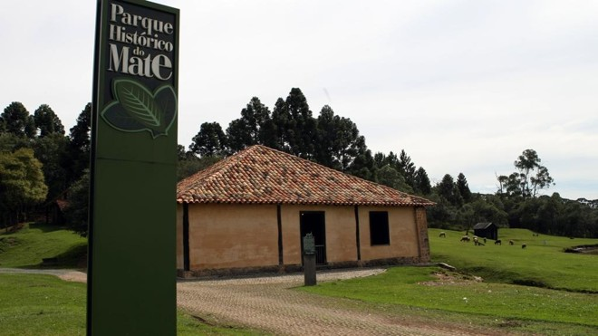
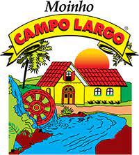

Devido a abundância de matéria-prima mineral, o Município de
Campo Largo destaca-se pelo grande número de indústrias cerâmicas
PARQUE DA ERVA MATE
O Parque Histórico do Mate é um parque temático no município de Campo Largo, no estado do Paraná. É conhecido por retratar o ciclo da erva-mate e é considerado um dos pontos turísticos da cidade. O Parque Histórico do Mate está localizado no bairro Rondinha, às margens da BR-277 (sentido Curitiba-Campo Largo) e sua área corresponde a 317.000 m2 de área verde, contendo bosques com árvores nativas, lagoa e área de lazer para os visitantes. O local foi administrado pela Secretaria de Estado da Cultura, sendo ligado ao Museu Paranaense. Em 2017 a prefeitura do município assumiu a gestão do parque.
MOINHO CAMPO LARGO
Fundada em 1964 no Rio Verde - Colônia de imigrantes italianos em Campo Largo
